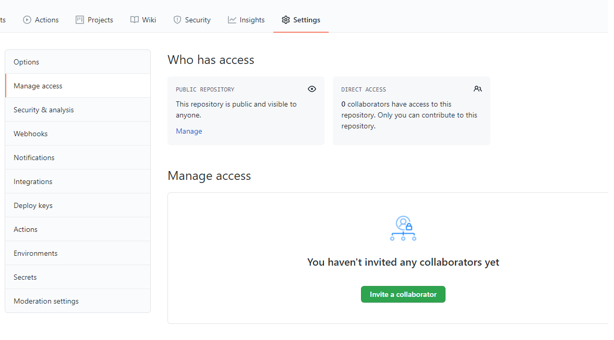

이제 로컬에서 git을 다루는 것은 얼추 다룬 것 같으니 원격저장소와 통신하는 것에 대해 알아봅시다.
이 글에선 원격저장소 github을 기준으로 설명드리겠습니다.
참고로 gitlab과 github의 차이는 외부와 차단된 공간에서 코드를 호스팅 하는가, 외부에 공개된 공간에서 코드를 호스팅 하는가의 차이입니다. gitlab의 경우 네트워크가 차단된 공간(주로 회사)에 gitlab을 올릴 서버를 둬야합니다.
원격저장소에 프로젝트 생성
먼저 원격저장소에 프로젝트를 등록해 봅시다. 프로젝트가 저장될 저장소(repository)를 만들어야합니다.
로그인(또는 회원가입) 하고나면 상단에 다음과 같은 모양을 볼 수 있습니다.
빨간 네모를 클릭하면 다음 메뉴들이 보입니다.
여기서 New repository를 클릭하면 소스들을 저장할 저장소를 만들 수 있습니다.
저장소 생성을 위한 페이지 입니다. 여기서 저장소를 공개할지 비공개로 할지 선택해준 뒤, 저장소 이름을 입력하고 아래 create repository를 눌러 저장소를 생성합니다. 저는 awef로 대충 이름 지었습니다.
위와 같은 페이지가 뜨는데, 위 그림의 1번이 바로 저장소의 주소입니다. 저장소의 주소는 다음과 같은 형식을 띱니다.
https://github.com/[유저 아이디]/[저장소 이름].git
우리는 이 주소를 통해 원격 저장소로부터 로컬 저장소로 복사해오거나, 원격 저장소의 코드를 업데이트 합니다.
새로운 프로젝트를 원격 저장소에 올리기
2번은 로컬 저장소 없이 아에 새로운 프로젝트를 시작하는 경우 따라가는 코드입니다. README.md 파일을 만들고 원격저장소에 업로드 하기 까지의 과정을 알려주고 있습니다. 최초의 commit을 생성해줘야 master 브랜치가 가리킬 commit이 생기고 비로소 git을 이용할 수 있기 때문에 필요한 과정입니다. 최초의 commit을 first commit이라고 이름 짓는건 약간 국룰인거 같습니다.
기존의 프로젝트를 원격 저장소에 올리기
만약 전에 작업 하던 로컬 저장소가 이미 존재한다면 작업이 간단해집니다. 저장소에 프로젝트를 올리기만 하면 되기 때문이죠.
master? main?
중간중간에 보이는 못보던 옵션이 있습니다.
|
|
위 명령은 main 브랜치를 master 브랜치로 설정하는 명령입니다. git에서 공식적으로 master 브랜치를 main 브랜치로 이름을 변경하겠다고 발표해서 앞으로는 main 브랜치를 써야하기에 master 브랜치로 생성된 브랜치를 main 브랜치로 이름을 바꿔줘야합니다. 관련 내용은 아래 링크를 참고하시길 바랍니다.
팀원 추가하기
저장소의 오른쪽 위에 저 …(빨간박스)를 클릭하면 setting창으로 들어갈 수 있습니다. 제 화면이 작아서 잘렸는데, 전체화면으로 보시는 분들은 setting이 바로 보일겁니다.
 setting의 manage access에 들어가면 팀원을 추가할 수 있습니다. 여기서 팀원을 추가해줘야 팀원들도 이 저장소에 push작업을 수행할 수 있습니다.
remote: 원격저장소를 관리하는 명령어
이제 로컬저장소와 원격저장소를 연결해봅시다.
git remote만 입력하면 연결된 원격저장소 리스트를 보여주지만, --verbose옵션을 주면 fetch(코드 받아오기)하는 원격저장소, push(코드 올리기)하는 원격저장소로 세분화하여 보여줍니다.
로컬에서 처음 프로젝트를 만드신 분이라면 당연히 결과가 아무것도 나오지 않을 것입니다. clone을 통해 로컬저장소를 만든 경우 자동으로 등록된 원격저장소가 보일 겁니다.
remote add: 원격저장소 등록
remote add는 원격저장소를 등록하는 명령입니다. 연결할 저장소의 이름과 주소를 입력하면 됩니다.
이제 내 로컬저장소에 원격저장소의 주소를 등록했기 때문에 이 원격저장소로부터 코드를 업데이트 할 수 있습니다.
remote remove: 원격저장소 삭제
워 명령으로 원격 저장소를 삭제할 수 있습니다.
push: 원격저장소에 코드 올리기
새로 작성한 코드를 올려 원격저장소를 업데이트 하는 명령입니다.
upstream 설정
‘대체로 A 브랜치는 P 원격저장소에 업로드해’ 라는 설정입니다.
이제 우리는 원격저장소 이름과 브랜치명을 생략해도 push작업을 할 수 있습니다.
pull,fetch: 로컬 브랜치 업데이트
원격저장소의 코드가 바뀌면 로컬 브랜치를 업데이트 해줘야 합니다. pull과 fetch는 모두 원격 저장소에서 코드를 받아와 로컬 브랜치를 업데이트 하는 명령입니다.
pull과 fetch의 차이
fetch명령은 원격저장소의 코드를 받아오기’만' 합니다. 즉, 로컬 브랜치에 원격저장소의 코드를 병합하지 않습니다.
diff 명령은 원격저장소와 내 로컬브랜치를 비교해 차이점을 보여줍니다. fetch명령은 병합을 진행하지 않기 때문에 병합을 추가적으로 진행해줘야 합니다.
|
|
origin/master는 origin(원격저장소의 별칭)의 master 브랜치를 가리킵니다.
pull명령은 fetch+merge입니다. 원격저장소의 코드를 받아와 바로 병합까지 진행해버립니다. 원격저장소를 100% 신뢰할 수 있다면 pull명령을 쓰겠지만, 혹시…? 싶다면 fetch와 diff로 코드를 비교한 뒤 세세한 merge를 진행하는 것을 추천합니다.
원격저장소에 다른 브랜치 올리기
원격저장소에도 브랜치의 개념은 존재합니다. 원격저장소에 master가 아닌 브랜치를 올리고 로컬 브랜치를 원격저장소의 브랜치와 연결할 수 있습니다.
[↑ 원격저장소의 브랜치가 2개에서 3개로 늘었고, merge pull request를 보낼 수 있다.] 이제 github에 새로 들어온 브랜치를 brances를 클릭해 확인할 수 있습니다. 그리고 pull request를 보낼 수 있게 되었습니다. pull request는 원격저장소에 commit 또는 branch를 올리기 전 최종관문입니다. 원격저장소를 관리하는 관리자에게 pull request를 승낙/거절할 권리가 있습니다. 관리자의 승낙까지 받아야 원격저장소에 정식으로 branch가 올라가게 됩니다.
코드를 받아오지 않고 원격저장소 commit보기
checkout은 원격저장소의 브랜치에도 사용할 수 있습니다.
HEAD가 원격 브랜치의 commit을 가리키게 되고 commit들을 하나하나 볼 수 있습니다.
마치며
다음 글에선 그 밖의 유용한 명령어들을 정리해보겠습니다.